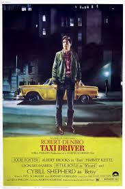

Taxi Driver (1976)

A mentally unstable veteran works as a nighttime taxi driver in New York City, where the perceived decadence and sleaze fuels his urge for violent action, while attempting to liberate a twelve-year-old prostitute
Meurtre d'un bookmaker chinois (1976)

A proud strip club owner is forced to come to terms with himself as a man, when his gambling addiction gets him in hot water with the mob, who offer him only one alternative.